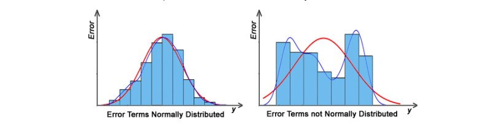
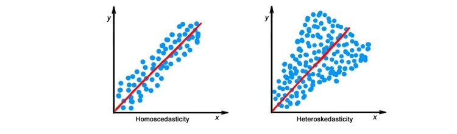

Linear regression is a popular and widely used algorithm in machine learning for predicting continuous numeric values. It models the relationship between independent variables (input features) and a dependent variable (target variable) by fitting a linear equation to the observed data. In this section, we will provide a brief overview of linear regression, including the mathematical explanation and figures to aid understanding
Mathematical Explanation
The linear regression algorithm aims to find the best-fit line that represents the relationship between the input features (x) and the target variable (y). The equation for a simple linear regression can be expressed as:
$$y = m x +c$$
where
y represents the target variable or the dependent variable we want to predict.
x represents the input feature or the independent variable.
m represents the slope of the line, which represents the rate of change of y with respect to x.
c represents the y-intercept, which is the value of y when x is equal to 0.
A linear line showing the relationship between the dependent and independent variables is called a regression line.
A regression line can show two types of relationship:
Positive Linear Relationship: If the dependent variable increases on the Y-axis and independent variable increases on X-axis, then such a relationship is termed as a Positive linear relationship.
Negative Linear Relationship: If the dependent variable decreases on the Y-axis and independent variable increases on the X-axis, then such a relationship is called a negative linear relationship.
Linear regression can be further divided into two types of the algorithm:
Simple Linear Regression: If a single independent variable is used to predict the value of a numerical dependent variable, then such a Linear Regression algorithm is called Simple Linear Regression.
Multiple Linear regression: If more than one independent variable is used to predict the value of a numerical dependent variable, then such a Linear Regression algorithm is called Multiple Linear Regression.
Mathematical Explanation:
There are parameters β0, β1, and σ2, such that for any fixed value of the independent variable , the dependent variable is a random variable related to through the model equation:
$$y=\beta_0 + \beta_1 x +\epsilon$$
where
= Dependent Variable (Target Variable)
= Independent Variable (predictor Variable)
= intercept of the line (Gives an additional degree of freedom)
= Linear regression coefficient (scale factor to each input value).
= random error.
The goal of linear regression is to estimate the values of the regression coefficients
This algorithm explains the linear relationship between the dependent(output) variable
and the independent(predictor) variable using a straight line
The goal of the linear regression algorithm is to get the best values for
and to find the best fit line.
The best fit line is a line that has the least error which means the error between predicted values and actual values should be minimum.
For a datset with observation ,
where the above function can be written as follows
where is the value of the observation of the dependent variable (outcome variable) in the smaple, is the value of observation
of the independent variable or feature in the sample, is the random error (also known as residuals) in predicting the value of ,
and are the regression parameters (or regression coefficients or feature weights).
Note:
The quantity ϵ in the model equation is the “error” -- a random variable, assumed to be symmetrically distributed with
It is to be noted here that there are no assumption made about the distribution of ϵ, yet.
The (the intercept of the true regression line) parameter is average value of Y when x is zero.
The (the slope of the true regression line): The expected (average) change in Y associated with a 1-unit increase in the value of x.
What is ?: is a measure of how much the values of Y spread out about the mean value (homogeneity of variance assumption).
In simple linear regression, there is only one independent variable () and one dependent variable (). The parameters (coefficients) in simple linear regression can be calculated using the method of ordinary least squares (OLS). The equations and formulas involved in calculating the parameters are as follows:
Model Representation:
The simple linear regression model can be represented as:
$$y = \beta_0 + \beta_1 x + \epsilon$$
Therefore, we can write:
.
Cost Function or mean squared error (MSE):
The MSE, measures the average squared difference between the predicted values () and the actual values of the dependent variable (). It is given by:
$$MSE = \frac{1}{n} \sum (y_i - \hat{y}_i)^2$$
Where:
is the number of data points.
is the actual value of the dependent variable for the i-th data point.
is the predicted value of the dependent variable for the i-th data point.
Minimization of the Cost Function:
The parameters and are estimated by minimizing the cost function. The formulas for calculating the parameter estimates are derived from the derivative of the cost function with respect to each parameter.
The parameter estimates are given by:
$$
Where:
is the estimated -intercept.
is the estimated slope.
is the covariance between and .
is the variance of .
is the mean of .
is the mean of .
The estimated parameters and provide the values of the intercept and slope that best fit the data according to the simple linear regression model.
Prediction:
Once the parameter estimates are obtained, predictions can be made using the equation:
$$\hat{y} = \hat{\beta_0} + \hat{\beta_1} x$$
Where:
is the predicted value of the dependent variable.
is the estimated y-intercept.
is the estimated slope.
is the value of the independent variable for which the prediction is being made.
These equations and formulas allow for the calculation of the parameters in simple linear regression using the method of ordinary least squares (OLS). By minimizing the sum of squared differences between predicted and actual values, the parameters are determined to best fit the data and enable prediction of the dependent variable.
Gradient Descent for Linear Regression:
A regression model optimizes the gradient descent algorithm to update the coefficients of the line by reducing the cost function by randomly selecting coefficient values and then iteratively updating the values to reach the minimum cost function.
Gradient Descent is an iterative optimization algorithm commonly used in machine learning to find the optimal parameters in a model. It can also be applied to linear regression to estimate the parameters (coefficients) that minimize the cost function.
The steps involved in using Gradient Descent for Linear Regression are as follows:
Define the Cost Function: The cost function for linear regression is the Mean Squared Error (MSE), which measures the average squared difference between the predicted values (ŷ) and the actual values (y) of the dependent variable.
Where:
is the number of data points.
is the actual value of the dependent variable for the i-th data point.
is the predicted value of the dependent variable for the i-th data point.
Initialize the Parameters: Start by initializing the parameters (coefficients) with random values. Typically, they are initialized as zero or small random values.
Calculate the Gradient: Compute the gradient of the cost function with respect to each parameter. The gradient represents the direction of steepest ascent in the cost function space.
$$\frac{\partial (MSE)}{\partial \beta_0} = \frac{1}{n}\sum (\hat{y}_i - y_i)$$
$$\frac{\partial (MSE)}{\partial \beta_1} = \frac{1}{n}\sum (\hat{y}_i - y_i)\times x_i$$
Where:
is the gradient with respect to the y-intercept parameter ().
is the gradient with respect to the slope parameter ().
is the predicted value of the dependent variable for the i-th data point.
is the actual value of the dependent variable for the i-th data point.
is the value of the independent variable for the i-th data point.
Update the Parameters: Update the parameters using the gradient and a learning rate (
α), which determines the step size in each iteration.
$$\beta_0 = \beta_0 - \alpha \times \frac{\partial (MSE)}{\partial \beta_0}$$
$$\beta_1 = \beta_1 - \alpha \times \frac{\partial (MSE)}{\partial \beta_1}$$
Repeat this update process for a specified number of iterations or until the change in the cost function becomes sufficiently small.
Predict: Once the parameters have converged or reached the desired number of iterations, use the final parameter values to make predictions on new data.
$$\hat{y} = \beta_0 +\beta_1 x$$
Where:
is the predicted value of the dependent variable.
is the $y$-intercept parameter.
is the slope parameter.
is the value of the independent variable for which the prediction is being made.
Gradient Descent iteratively adjusts the parameters by updating them in the direction of the negative gradient until it reaches a minimum point in the cost function. This process allows for the estimation of optimal parameters in linear regression, enabling the model to make accurate predictions on unseen data.
Let’s take an example to understand this. If we want to go from top left point of the shape to bottom of the pit, a discrete number of steps can be taken to reach the bottom.
If you decide to take larger steps each time, you may achieve the bottom sooner but, there’s a probability that you could overshoot the bottom of the pit and not even near the bottom.
In the gradient descent algorithm, the number of steps you’re taking can be considered as the learning rate, and this decides how fast the algorithm converges to the minima.
In the gradient descent algorithm, the number of steps you’re taking can be considered as the learning rate i.e.
α, and this decides how fast the algorithm converges to the minima.
Assumptions of Linear Regression
Linearity of residuals: The relationship between the independent variables and the dependent variable is assumed to be linear. This means that the change in the dependent variable is directly proportional to the change in the independent variables.
Independence: The observations in the dataset are assumed to be independent of each other. There should be no correlation or dependence between the residuals (the differences between the actual and predicted values) of the dependent variable for different observations.
Normal distribution of residuals: The mean of residuals should follow a normal distribution with a mean equal to zero or close to zero. This is done in order to check whether the selected line is actually the line of best fit or not. If the error terms are non-normally distributed, suggests that there are a few unusual data points that must be studied closely to make a better model.

The equal variance of residuals: The error terms must have constant variance. This phenomenon is known as Homoscedasticity. The presence of non-constant variance in the error terms is referred to as Heteroscedasticity. Generally, non-constant variance arises in the presence of outliers or extreme leverage values.

Evaluation Metrics for Linear Regression
To train an accurate linear regression model, we need a way to quantify how good (or bad) our model performs. In machine learning, we call such performance-measuring functions loss functions. Several popular loss functions exist for regression problems.
To measure our model's performance, we'll use one of the most popular: mean-squared error (MSE). Here are some commonly used evaluation metrics:
Mean Squared Error (MSE): MSE quantifies how close a predicted value is to the true value, so we'll use it to quantify how close a regression line is to a set of points.
The Mean Squared Error measures the average squared difference between the predicted values and the actual values of the dependent variable. It is calculated by taking the average of the squared residuals.
$$\boxed{\text{MSE} = \frac{1}{n} \sum \left(y_i - \hat{y}_i\right)^2}$$
where:
is the number of data points.
is the actual value of the dependent variable for the $i-th$ data point.
is the predicted value of the dependent variable for the i-th data point.
A lower MSE value indicates better model performance, with zero being the best possible value.
Root Mean Squared Error (RMSE): The Root Mean Squared Error is the square root of the MSE and provides a more interpretable measure of the average prediction error.
$$\boxed{\text{RMSE} = \sqrt{\text{MSE}}}$$
Like the MSE, a lower RMSE value indicates better model performance.
Mean Absolute Error (MAE):
The Mean Absolute Error measures the average absolute difference between the predicted values and the actual values of the dependent variable. It is less sensitive to outliers compared to MSE.
$$\boxed{\text{MAE} = \frac{1}{n} \sum |y_i - \hat{y}_i|}$$
A lower MAE value indicates better model performance.
R-squared () Coefficient of Determination
The R-squared value represents the proportion of the variance in the dependent variable that is explained by the independent variables. It ranges from 0 to 1,
where 1 indicates that the model perfectly predicts the dependent variable. A negative means that our model is doing worse.
$$\boxed{R^2 = 1 - \frac{\text{RSS}}{\text{TSS}}}$$
where:
Residual sum of Squares (RSS) is defined as the sum of squares of the residual for each data point in the plot/data. It is the measure of the difference between the expected and the actual observed output.
=
is the predicted value of the dependent variable from the regression model
is the mean of the observed values of the dependent variable.
A higher
value indicates a better fit of the model to the data.
is commonly interpreted as the percentage of the variation in the dependent variable that is explained by the independent variables.
However, it is important to note that
does not determine the causal relationship between the independent and dependent variables. It is solely a measure of how well the model fits the data.
Note: A higher R-squared value indicates a better fit of the model to the data. However, it's essential to consider other factors and use
R-squared in conjunction with other evaluation metrics to fully assess the model's performance. R-squared has limitations, especially in the case of overfitting,
where a model may fit the training data very well but perform poorly on new, unseen data.
Adjusted R-squared:
The Adjusted R-squared accounts for the number of independent variables in the model. It penalizes the inclusion of irrelevant variables and rewards the inclusion of relevant variables.
A higher Adjusted $R^2$ value indicates a better fit of the model while considering the complexity of the model.
These evaluation metrics help assess the performance of a linear regression model by quantifying the accuracy of the predictions and the extent to which the independent variables explain the dependent variable. It is important to consider multiple metrics to gain a comprehensive understanding of the model's performance.
Understanding and Addressing Fitting Issues in Machine Learning Models
Overfitting and underfitting are two common problems encountered in machine learning. They occur when a machine learning model fails to generalize well to new data.
Overfitting
Description: Overfitting occurs when a machine learning model learns the training data too well, including the noise and irrelevant patterns. As a result, the model becomes too complex and fails to capture the underlying relationships in the data. This leads to poor performance on unseen data.
Signs of overfitting:
The model performs well on the training data but poorly on unseen data.
The model is complex and has a large number of parameters.
Causes: Too complex model, excessive training time, or insufficient regularization.
Underfitting
Description: Underfitting occurs when a machine learning model is too simple and does not capture the underlying relationships in the data. This results in poor performance on both the training data and unseen data.
Signs of underfitting:
The model performs poorly on both the training data and unseen data.
The model is simple and has a small number of parameters.
Causes: Model complexity is too low, insufficient training, or inadequate feature representation.
Bias (Systematic Error):
Description: The model consistently makes predictions that deviate from the true values.
Symptoms: Consistent errors in predictions across different datasets.
Causes: Insufficiently complex model, inadequate feature representation, or biased training data.
Variance (Random Error):
Description: The model's predictions are highly sensitive to variations in the training data.
Symptoms: High variability in predictions when trained on different subsets of the data.
Causes: Too complex model, small dataset, or noisy training data.
Data Leakage:
Description: Information from the validation or test set inadvertently influences the model during training.
Causes: Improper splitting of data, using future information during training.
Model Instability:
Description: Small changes in the input data lead to significant changes in model predictions.
Symptoms: Lack of robustness in the model's performance.
Causes: Sensitivity to outliers, highly nonlinear relationships.
Multicollinearity:
Description: High correlation among independent variables in regression models.
Symptoms: Unstable coefficient estimates, difficulty in isolating the effect of individual variables.
Causes: Redundant or highly correlated features.
Imbalanced Data:
Description: A disproportionate distribution of classes in classification problems.
Symptoms: Biased models toward the majority class, poor performance on minority classes.
Causes: Inadequate representation of minority class, biased sampling.
Preventing Overfitting and Underfitting
There are a number of techniques that can be used to prevent overfitting and underfitting. These include:
Regularization: Regularization is a technique that penalizes complex models. This helps to prevent the model from learning the noise and irrelevant patterns in the training data. Common regularization techniques include L1 regularization, L2 regularization, and dropout.
Early stopping: Early stopping is a technique that stops training the model when it starts to overfit on the validation data. The validation data is a subset of the training data that is held out during training and used to evaluate the model's performance.
Cross-validation: Cross-validation is a technique that divides the training data into multiple folds. The model is trained on a subset of the folds and evaluated on the remaining folds. This process is repeated multiple times so that the model is evaluated on all of the data. Cross-validation can be used to select the best hyperparameters for the model.
Model selection: Model selection is a technique that compares different models and selects the one that performs best on the validation data. This can be done using a variety of techniques, such as k-fold cross-validation or Akaike Information Criterion (AIC).